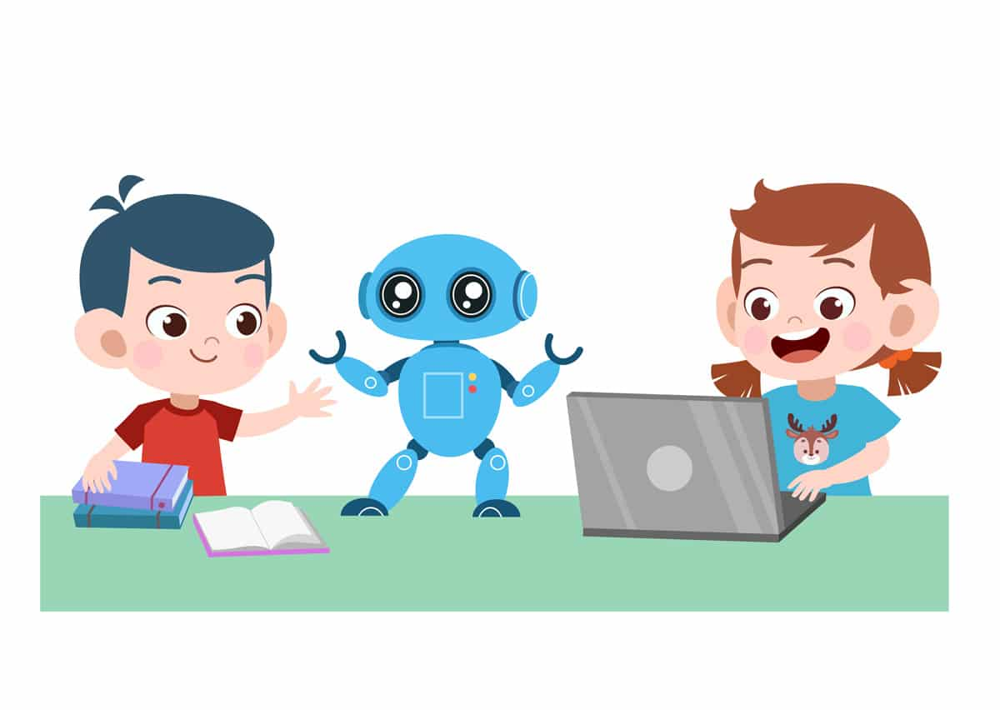

Mis proyectos
Introducción a la programacion-infantil
La introducción de la programación en la educación infantil implica enseñar a los niños
conceptos básicos de lógica y resolución de problemas a través de actividades interactivas y
juegos. Utilizando herramientas visuales y sencillas como bloques de colores, los niños pueden
crear secuencias de acciones que les permiten dar vida a personajes o controlar robots
virtuales. Este enfoque fomenta el pensamiento crítico, la creatividad y la colaboración,
mientras los pequeños se divierten explorando el mundo de la tecnología y desarrollando
habilidades fundamentales para el siglo XXI. Esta iniciación, por tanto, debe producirse de
manera natural y lúdica a través de un conjunto de herramientas y materiales que ayuden a
desarrollar el currículo de Infantil. “Su inclusión ha de considerarse desde una perspectiva
transversal, de modo que llegue a convertirse en un elemento más y con un carácter normalizado y
globalizado como el resto de actividades habituales del aula.
